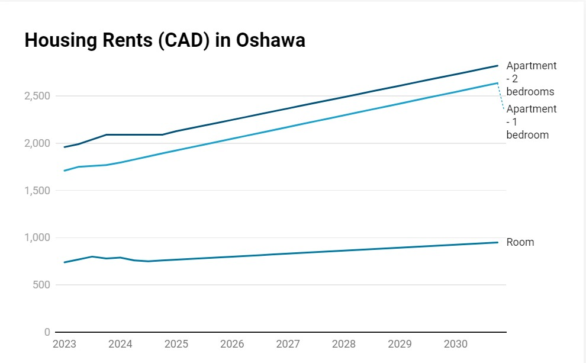
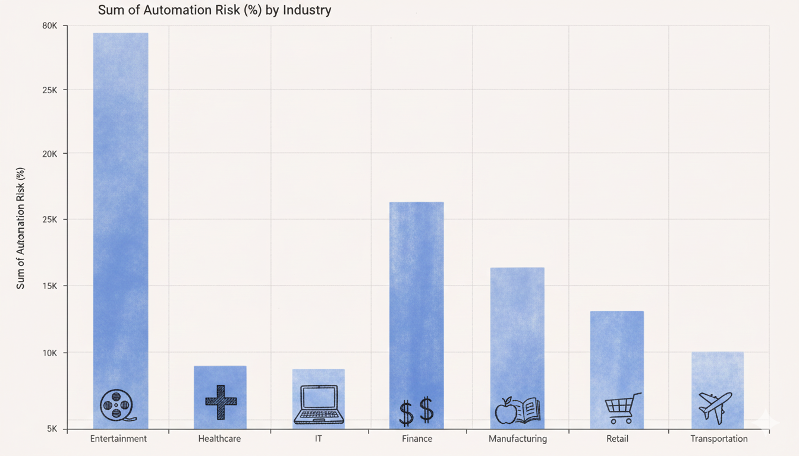
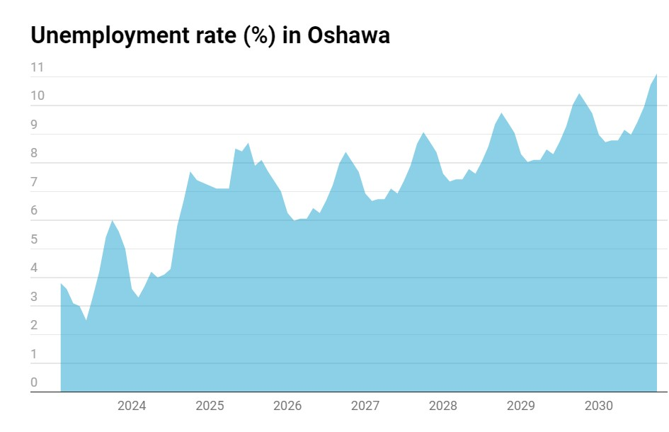

Now, rising rents, job disruption, and higher unemployment rate,
are making it harder to live here

Oshawa was affordable before AI
As AI transforms industries, it's making it much harder for young professionals to find and keep jobs.
As AI transforms industries, it's making it much harder for young professionals to find and keep jobs.





Industries affected by AI in Canada
Explore the data shared of three young professionals

Embrace AI tools and technologies to enhance your professional capabilities. Like Catherine, who leveraged AI to advance her career, continuous learning and adaptation to new technologies is essential in today's job market.

Be flexible and proactive in adapting to industry transformations. The stories of us show that success requires resilience and the ability to navigate economic shifts and technological disruptions.

Explore and utilize available government support programs, training initiatives, and financial assistance. These resources can help bridge gaps during career transitions and provide essential support for those navigating the changing economy.